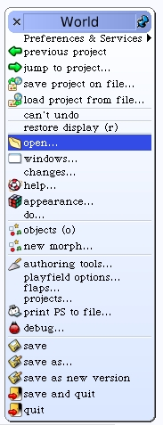
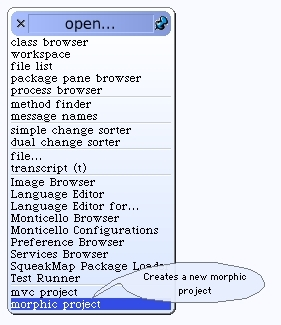
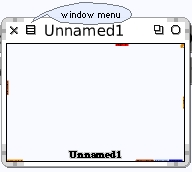

Setup
Squeak provides a way to "partition" off your work into projects. Each project has its own World. There is also a Change-Set associated with each project, but that's not important to us now.
I tend to organize my Squeak projects all from within one main project. I give that main project the name "sbw", my initials. Let's create that first project. Begin by selecting the "open..." menu. Then choose the "morphic project" menu. A new window appears with the title "Unnamed1". Click somewhere inside the new window to enter it.
  